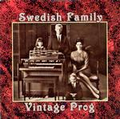

| Artist: | Swedish Family |
| Title: | Vintage Prog |
| Label: | Helicon House CD001 |
| Length(s): | 53 minutes |
| Year(s) of release: | 2004 |
| Month of review: | [04/2005] |
| 1) | Stoneheart | 6.03 |
| 2) | A Man Without Mind | 5.01 |
| 3) | The Gothenburg Heros | 3.58 |
| 4) | Waltz Of Sadness | 4.04 |
| 5) | The Last Goodbye | 4.28 |
| 6) | From The Foot | 6.10 |
| 7) | The Summerdress | 3.08 |
| 8) | The Flu | 5.17 |
| 9) | Östuna Anthem | 3.22 |
| 10) | The Agent Dance | 4.11 |
| 11) | Always Grumpy (bonus) | 4.18 |
| 12) | Brunos Exotica (bonus) | 3.08 |
A Man Without Mind takes a much more folky approach, and the theme is also more memorable, and yes humoristic as well. The accordion is put to good effect here. The guitar sounds very psyche, and maybe the theme overstays its welcome a bit, which is probably why the band starts fooling around in the middle, bending to the Arabic. More accordion on The Gothenburg Heros, which sounds quite frolic. There is something very anthemic about this one, especially when organ and guitar set in after one and half minute to mimick the accordion. The impression of liveness is of course fake.
Waltz Of Sadness is aptly titled. Dreamy keyboards, a tragic soprano sax and again a bit of accordion make up this tearjerker. And for once, everything stays subdued. With The Last Goodbye we continue on the same footing, this time first without the sax. Later the sax comes back in. I wonder why they did not make this into a single track.
From The Foot is another 'live' one. There is a certain Focus feel in here. As usual guitar and brimming organ dominate. The melody is rather sing-song, but many of the melodies are rather simple. But at least they exist, and we even get to hear some memorable ones. The sound of people clapping with the music is a nice touch.
The Summerdress is back to subdued and very melodic folk oriented music. Maybe folk oriented can be made more precise to what you might fisherman's music, because that is the feeling I get when I hear this. Fisherman's tune on a proggy background of brimming Hammond and a bit of guitar. The presence of the sax makes the outcome a bit 'classical' sounding.
The pace comes back in again with the lightfooted The Flu. Again, a very thematic song, with some vocalizations which make it sound like Focus on Prozac, or a bit of Camel if you like, but then as if Harbour Of Tears were recorded 30 years back. There should be more blistering here, which happens somewhat at the end when the guitar comes in more fully.
Östuna Anthem is indeed a stately anthem, and has the best melody so far. The Agent Dance is another live one, and a bit of a organ driven rocker. This is what I expected to hear more on this album. A frolic tune.
Always Grumpy is the first of the two bonus tracks. Why this is called a bonus track, I do not know. It fits in well with the other ones, although it happens to be a bit more up-beat. The folkiness stays. Brunos Exotica is the final tune. This is typical instrumental prog from beginning of the seventies.